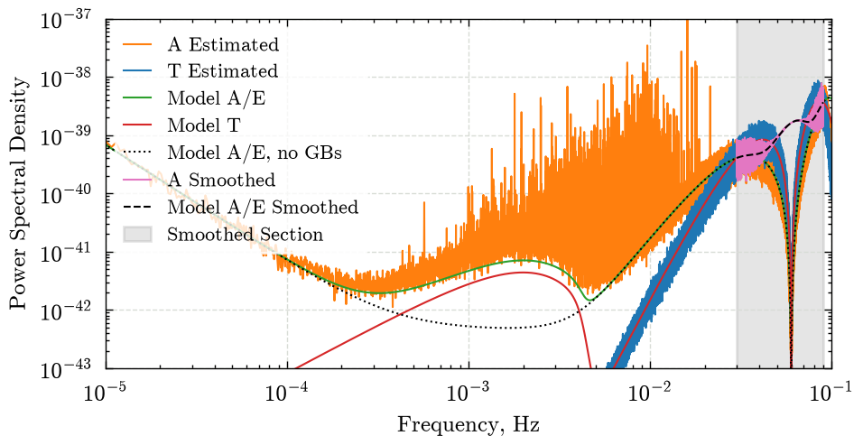
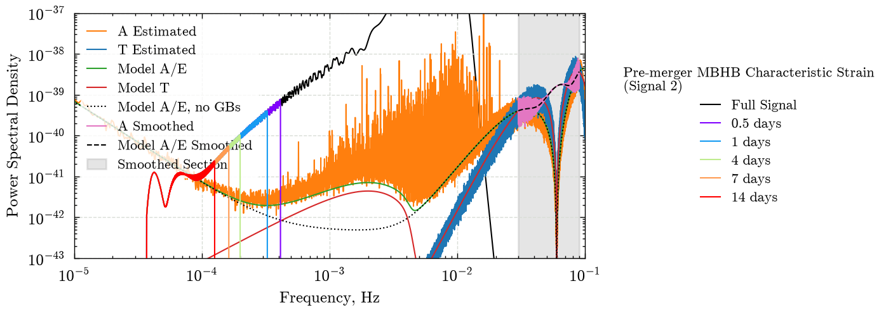
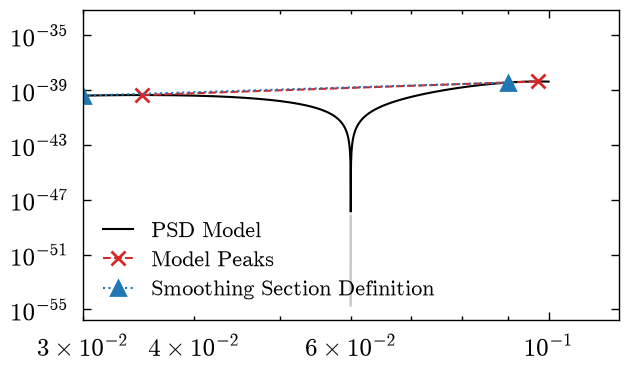
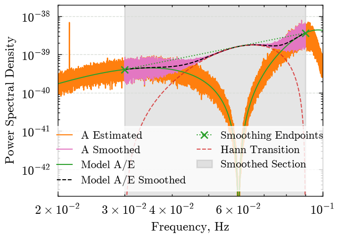

Plotting PSDs#
In this notebook we generate the Figure 1 and Figure 2 plots for use in the paper. The PSDs and characteristic strains have been generated in estimate_psds.sh and characteristic_strain.sh respectively, so we will load them in
import pycbc.psd
import numpy as np
from matplotlib import pyplot as plt
plt.style.use('../paper.mplstyle')
paper_plot_dir = '../paper/images/dataset'
import ldc.lisa.noise.noise as ldc_noise
import sys
import os
search_dir = os.path.abspath("../search")
if search_dir not in sys.path:
sys.path.insert(0, search_dir)
import plotting_utils
import h5py
cutoff_days = [0.5, 1, 4, 7, 14]
# Bounds of the smoothed (bridged) section in Hz - must match estimate_psds.py
section_lower, section_upper = 0.03, 0.09
def load_psd(filename, flen, delta_f):
return pycbc.psd.from_txt(
filename,
flen,
delta_f,
delta_f,
is_asd_file=False
)
/mnt/lustre2/shared_conda/envs/garethcd/env_lisa_premerger_sangria/lib/python3.11/site-packages/pycbc/types/array.py:36: UserWarning: Wswiglal-redir-stdio:
SWIGLAL standard output/error redirection is enabled in IPython.
This may lead to performance penalties. To disable locally, use:
with lal.no_swig_redirect_standard_output_error():
...
To disable globally, use:
lal.swig_redirect_standard_output_error(False)
Note however that this will likely lead to error messages from
LAL functions being either misdirected or lost when called from
Jupyter notebooks.
To suppress this warning, use:
import warnings
warnings.filterwarnings("ignore", "Wswiglal-redir-stdio")
import lal
import lal as _lal
/mnt/lustre2/shared_conda/envs/garethcd/env_lisa_premerger_sangria/lib/python3.11/site-packages/lisaconstants/compat/astropy.py:252: UserWarning: The following constants differ between lisaconstants and the version of astropy you have installed: VACUUM_PERMEABILITY. The recommended version of astropy is 7.2.0. Use a different one at your own risks.
You may also open an issue at https://gitlab.esa.int/lisa-sgs/commons/lisa-constants to warn that lisaconstants is not compatible with astropy v8.0.1
warnings.warn(
# Load in PSD files
duration = 365 * 86400
delta_t = 5
flen = int(duration / delta_t) // 2 + 1
delta_f = 1 / duration
estimated_format = '{channel}_sangria_hm_PSD.txt'
A_estimate = load_psd(estimated_format.format(channel='A'), flen=flen, delta_f=delta_f)
T_estimate = load_psd(estimated_format.format(channel='T'), flen=flen, delta_f=delta_f)
smoothed_estimated_format = '{channel}_sangria_hm_SMOOTHED_PSD.txt'
A_smoothed = load_psd(smoothed_estimated_format.format(channel='A'), flen=flen, delta_f=delta_f)
# The noise-only residual PSDs (data with every signal type removed).
residual_A_psd = load_psd('residual_A_sangria_hm_PSD.txt', flen=flen, delta_f=delta_f)
residual_E_psd = load_psd('residual_E_sangria_hm_PSD.txt', flen=flen, delta_f=delta_f)
AE_model = load_psd('model_AE_PSD.txt', flen=flen, delta_f=delta_f)
T_model = load_psd('model_T_PSD.txt', flen=flen, delta_f=delta_f)
AE_model_nogb = load_psd('model_AE_NOGB_PSD.txt', flen=flen, delta_f=delta_f)
AE_model_smoothed = load_psd('model_AE_SMOOTHED_PSD.txt', flen=flen, delta_f=delta_f)
/mnt/lustre2/shared_conda/envs/garethcd/env_lisa_premerger_sangria/lib/python3.11/site-packages/pycbc/psd/read.py:76: RuntimeWarning: divide by zero encountered in log
slog = numpy.log(noise_data)
Now make the PSD plot - no smoothing
def plot_psd_lines(ax):
lines_to_plot = (
(A_estimate, 'A Estimated', 'tab:orange', '-'),
(T_estimate, 'T Estimated', 'tab:blue', '-'),
(AE_model, 'Model A/E', 'tab:green', '-'),
(T_model, 'Model T', 'tab:red', '-'),
(AE_model_nogb, 'Model A/E, no GBs', 'k', ':'),
)
for psd, label, c, linestyle in lines_to_plot:
ax.loglog(
psd.sample_frequencies,
psd,
c=c,
label=label,
linestyle=linestyle,
rasterized=True,
)
smoothed_section_upper = 0.09
smoothed_section_lower = 0.03
smoothed_lines = [
(A_smoothed, 'A Smoothed', 'tab:pink', '-'),
(AE_model_smoothed, 'Model A/E Smoothed', 'k', '--'),
]
for psd, label, c, linestyle in smoothed_lines:
idx_min = np.argmin(abs(psd.sample_frequencies - smoothed_section_lower))
idx_max = np.argmin(abs(psd.sample_frequencies - smoothed_section_upper))
ax.loglog(
psd.sample_frequencies[idx_min:idx_max],
psd[idx_min:idx_max],
c=c,
label=label,
linestyle=linestyle,
rasterized=True,
)
ax.axvspan(
0.03, 0.09,
color='gray', zorder=-100, label='Smoothed Section', alpha=0.2
)
return ax.legend(loc='upper left')
width = plt.rcParams["figure.figsize"][0] * 1.5
height = plt.rcParams["figure.figsize"][1] * 1.25
fig, ax = plt.subplots(1, figsize=(width, height))
leg1 = plot_psd_lines(ax)
ax.set_ylabel("Power Spectral Density")
ax.set_xlabel("Frequency, Hz")
ax.set_ylim([1e-43, 1e-37])
ax.set_xlim([1e-5, 1e-1])
ax.grid(zorder=-100)

PSDs money plot (Figure 1)#
But we want to get a bit more information out: do Massive black hole binaries clash with the galactic binary background when analysing them pre-merger?
So lets have a look at the charcteristic strain. First we load it in, then add to the PSDs plot that we made above:
time_before_colors = plotting_utils.get_colors(cutoff_days)
time_before_colors[0] = 'k'
paper_example_signal = 2
width = plt.rcParams["figure.figsize"][0] * 1.5
height = plt.rcParams["figure.figsize"][1] * 1.25
fig, ax = plt.subplots(1, figsize=(width, height))
leg1 = plot_psd_lines(ax)
with h5py.File('characteristic_strain/collected_characteristic_strain.hdf', 'r') as ccsf:
freqs = ccsf['frequencies'][:]
valid = freqs > 0
freqs = freqs[valid]
full_char = np.sqrt(ccsf[str(paper_example_signal)]['0_A'][valid] ** 2 + ccsf[str(paper_example_signal)]['0_E'][valid] ** 2)
char = {
days: np.sqrt(ccsf[str(paper_example_signal)][str(days).replace('.','p') + '_A'][valid] ** 2 +
ccsf[str(paper_example_signal)][str(days).replace('.','p') + '_E'][valid] ** 2)
for days in cutoff_days
}
line2 = []
labels2 = []
ax.loglog(
freqs,
full_char ** 2 / freqs,
c='k',
zorder=-90,
rasterized=True
)
line2.append(
ax.loglog(
[],
[],
color='k',
)[0]
)
labels2.append('Full Signal')
for days in cutoff_days:
ax.loglog(
freqs,
char[days] ** 2 / freqs,
color=time_before_colors[days],
label=f'{days} days',
zorder=40+days,
rasterized=True
)
line2.append(
ax.loglog(
[],
[],
color=time_before_colors[days],
)[0]
)
labels2.append(f'{days} days' if days > 0 else 'Full Signal')
leg2 = ax.legend(
line2,
labels2,
loc="center left",
title=f"Pre-merger MBHB Characteristic Strain\n(Signal {paper_example_signal})",
bbox_to_anchor=(1.05,0.5),
)
ax.add_artist(leg1)
ax.set_ylabel("Power Spectral Density")
ax.set_xlabel("Frequency, Hz")
ax.set_ylim([1e-43, 1e-37])
ax.set_xlim([1e-5, 1e-1])
ax.grid(zorder=-100)
fig.savefig(f'{paper_plot_dir}/figure_1_psds_with_sources.png')

Well thats nice, until around 3-4 days before merger, (for most signals) the MBHB strain is completely separate from the galactic binary foreground. Even at 0-5 & 1 day before merger, it is well below the MBHB signal.
This is important to show that this isn’t a ‘global fit’ problem: the MBHB characteristic strain sits well below the galactic binary foreground at all pre-merger times, so we can do this search without significantly worrying about removing the galactic binary foreground from the data 🥳🎉🎊
Load and plot the “smoothing section”#
To demonstrate what we are trying to do with the smoothing, we show the model PSD, and the peak either side of it. To use nicer numbers, we round these to 1sf and plot the difference that this makes (practically none)
from scipy.signal import find_peaks
pks = find_peaks(
np.where(
np.logical_and(
AE_model.sample_frequencies > 0.01,
AE_model.sample_frequencies < 0.1
),
AE_model,
0
)
)[0]
# We will use 0.03 and 0.09 as the bounds of the section.
section_lower, section_upper = 0.03, 0.09
print(AE_model.sample_frequencies[pks])
smoothing_window_bound_idxs = np.array((
np.argmin(
abs(AE_model.sample_frequencies - section_lower)
),
np.argmin(
abs(AE_model.sample_frequencies - section_upper)
),
))
fig, ax = plt.subplots(1, figsize=plt.rcParams["figure.figsize"])
plt.loglog(
AE_model.sample_frequencies,
AE_model,
color='k',
label="PSD Model"
)
plt.plot(
AE_model.sample_frequencies[pks],
AE_model[pks],
linestyle='--',
marker='x',
color='tab:red',
label='Model Peaks'
)
plt.plot(
AE_model.sample_frequencies[smoothing_window_bound_idxs],
AE_model[smoothing_window_bound_idxs],
linestyle=':',
marker='^',
color='tab:blue',
label="Smoothing Section Definition"
)
plt.xlim(0.03, 0.12)
plt.legend(loc='lower left')
[0.03497539 0.09725923]
<matplotlib.legend.Legend at 0x7fa011aa4690>

Now make the smoothed section plot (Figure 2)#
width = plt.rcParams["figure.figsize"][0]
height = plt.rcParams["figure.figsize"][1] * 1.25
# Lets plot the PSDs to compare them:
fig, ax = plt.subplots(1, figsize=(width, height))
lines_to_plot = (
(A_estimate, 'A Estimated', 'tab:orange', '-', None, None),
(A_smoothed, 'A Smoothed', 'tab:pink', '-', section_lower, section_upper),
(AE_model, 'Model A/E', 'tab:green', '-', None, None),
(AE_model_smoothed, 'Model A/E Smoothed', 'k', '--', section_lower, section_upper),
)
for (psd, label, color, linestyle, freqmin, freqmax) in lines_to_plot:
if freqmin is not None:
idx_min = np.argmin(abs(psd.sample_frequencies - freqmin))
else:
idx_min = None
if freqmax is not None:
idx_max = np.argmin(abs(psd.sample_frequencies - freqmax))
else:
idx_max = None
ax.loglog(
psd.sample_frequencies[idx_min:idx_max],
psd[idx_min:idx_max],
label=label,
color=color,
linestyle=linestyle,
rasterized=True
)
scatter_freqs = [section_lower, section_upper]
scatter_ys = [None, None]
for i, freq in enumerate(scatter_freqs):
idx = np.argmin(abs(AE_model.sample_frequencies - freq))
scatter_ys[i] = AE_model[idx]
ax.loglog(
scatter_freqs, scatter_ys, color='tab:green', marker='x', linestyle=':', zorder=50, label='Smoothing Endpoints'
)
# Plot the Hann window used to smoothly transition between the estimate and the 'bridge'.
# This is the same window applied in smooth_section() (estimate_psds.py).
# We multiply it by the bridge line so it sits at the correct scale on the plot.
idx_min = np.argmin(abs(AE_model.sample_frequencies - section_lower))
idx_max = np.argmin(abs(AE_model.sample_frequencies - section_upper))
section_freqs = AE_model.sample_frequencies[idx_min:idx_max]
from scipy.signal import windows
window = windows.hann(section_freqs.data.size)
# Reconstruct the bridge line (same as in smooth_section) to scale the window by.
start_x, start_y = AE_model.sample_frequencies[idx_min], AE_model[idx_min]
end_x, end_y = AE_model.sample_frequencies[idx_max], AE_model[idx_max]
slope = (np.log(end_y) - np.log(start_y)) / (np.log(end_x) - np.log(start_x))
intercept = np.log(start_y) - slope * np.log(start_x)
bridge_line = np.exp(intercept) * (section_freqs ** slope)
ax.loglog(
section_freqs,
window * bridge_line,
color='tab:red',
linestyle='--',
alpha=0.8,
label="Hann Transition"
)
ax.axvspan(
section_lower, section_upper,
color='gray', zorder=-100, label='Smoothed Section', alpha=0.2
)
ax.set_ylabel("Power Spectral Density")
ax.set_xlabel("Frequency, Hz")
ax.legend(loc='lower center', ncol=2)
ax.set_ylim([2e-43, 2e-38])
ax.set_xlim([2e-2, 1e-1])
ax.grid(zorder=-100)
fig.savefig('../paper/images/dataset/figure_2_smoothing_60mHz.png')
